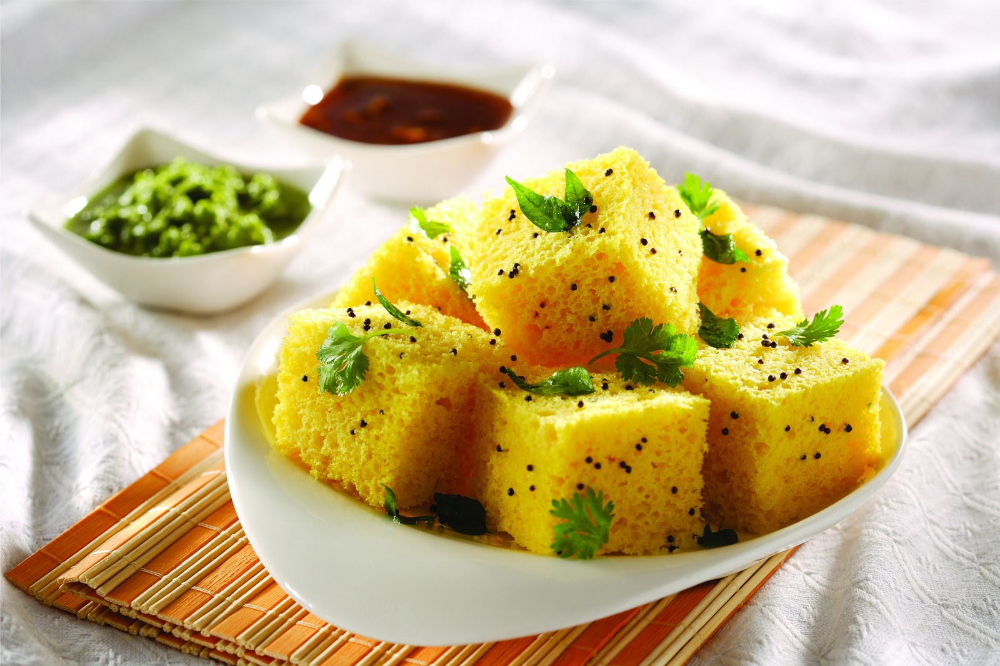

- Besan (Gram flour) - 1 cup
- Sooji (Semolina) - 1 tablespoon
- Curd - 1/2 cup
- Water - 1/2 cup
- Green chilies - 2, finely chopped
- Ginger paste - 1 teaspoon
- Salt - to taste
- Sugar - 1 teaspoon
- Eno fruit salt - 1 teaspoon
- Oil - 1 tablespoon
- Mustard seeds - 1 teaspoon
- Curry leaves - a few
- Fresh coriander leaves - for garnish
- Grated coconut - for garnish (optional)
|
- In a mixing bowl, combine besan, sooji, curd, water, chopped green chilies, ginger paste, salt, and sugar. Mix well to form a smooth batter.
- Grease a dhokla plate or any flat steaming vessel with oil.
- Add eno fruit salt to the batter and mix gently. The batter will become frothy.
- Immediately pour the batter into the greased plate and spread it evenly.
- Steam the batter for 12-15 minutes on medium heat or until a toothpick inserted comes out clean.
- Once done, remove from heat and let it cool slightly.
- For tempering, heat oil in a small pan. Add mustard seeds and curry leaves. Let them crackle.
- Pour the tempering over the steamed dhokla.
- Cut dhokla into squares or diamonds. Garnish with fresh coriander leaves and grated coconut (if using).
- Serve khaman dhokla warm with green chutney or tamarind chutney. Enjoy!
|

|